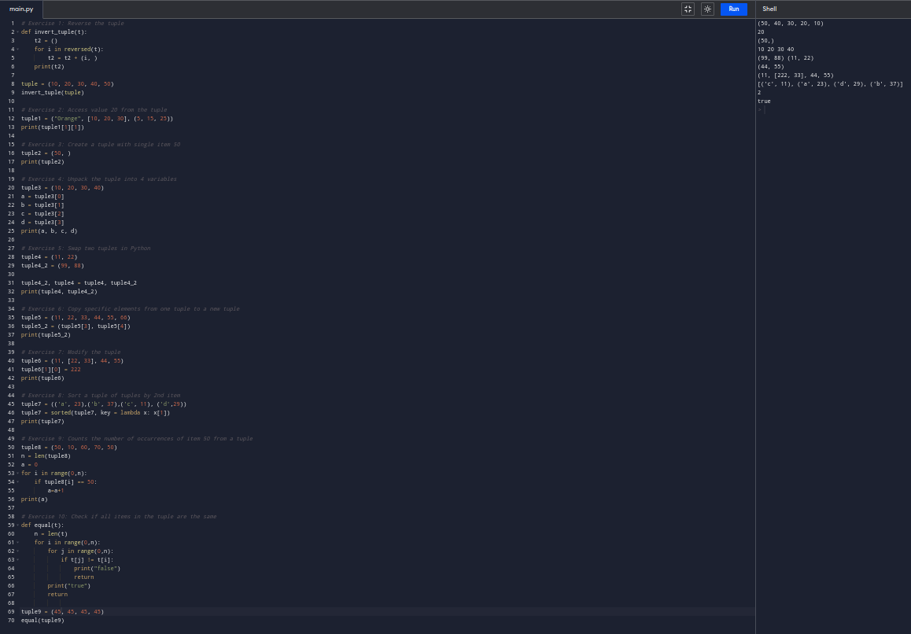

Functions
# Exercise 1: Reverse the tuple
def invert_tuple(t):
t2 = ()
for i in reversed(t):
t2 = t2 + (i, )
print(t2)
tuple = (10, 20, 30, 40, 50)
invert_tuple(tuple)
# Exercise 2: Access value 20 from the tuple
tuple1 = ("Orange", [10, 20, 30], (5, 15, 25))
print(tuple1[1][1])
# Exercise 3: Create a tuple with single item 50
tuple2 = (50, )
print(tuple2)
# Exercise 4: Unpack the tuple into 4 variables
tuple3 = (10, 20, 30, 40)
a = tuple3[0]
b = tuple3[1]
c = tuple3[2]
d = tuple3[3]
print(a, b, c, d)
# Exercise 5: Swap two tuples in Python
tuple4 = (11, 22)
tuple4_2 = (99, 88)
tuple4_2, tuple4 = tuple4, tuple4_2
print(tuple4, tuple4_2)
# Exercise 6: Copy specific elements from one tuple to a new tuple
tuple5 = (11, 22, 33, 44, 55, 66)
tuple5_2 = (tuple5[3], tuple5[4])
print(tuple5_2)
# Exercise 7: Modify the tuple
tuple6 = (11, [22, 33], 44, 55)
tuple6[1][0] = 222
print(tuple6)
# Exercise 8: Sort a tuple of tuples by 2nd item
tuple7 = (('a', 23),('b', 37),('c', 11), ('d',29))
tuple7 = sorted(tuple7, key = lambda x: x[1])
print(tuple7)
# Exercise 9: Counts the number of occurrences of item 50 from a tuple
tuple8 = (50, 10, 60, 70, 50)
n = len(tuple8)
a = 0
for i in range(0,n):
if tuple8[i] == 50:
a=a+1
print(a)
# Exercise 10: Check if all items in the tuple are the same
def equal(t):
n = len(t)
for i in range(0,n):
for j in range(0,n):
if t[j] != t[i]:
print("false")
return
print("true")
return
tuple9 = (45, 45, 45, 45)
equal(tuple9)

back